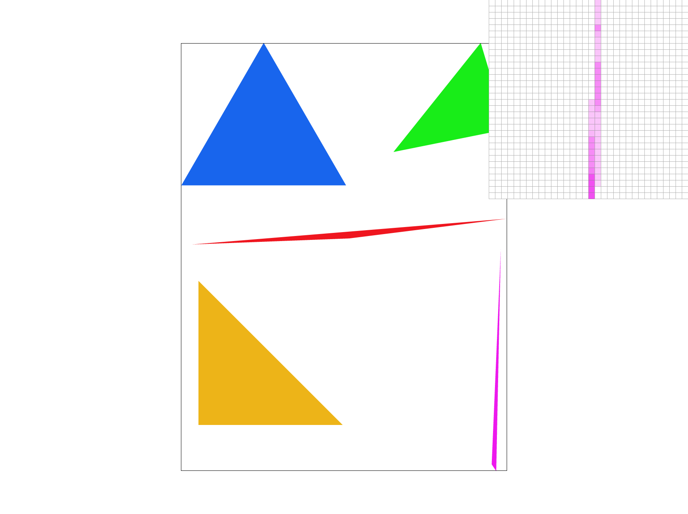
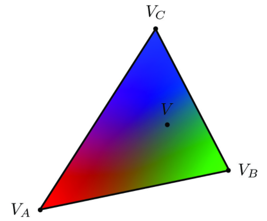
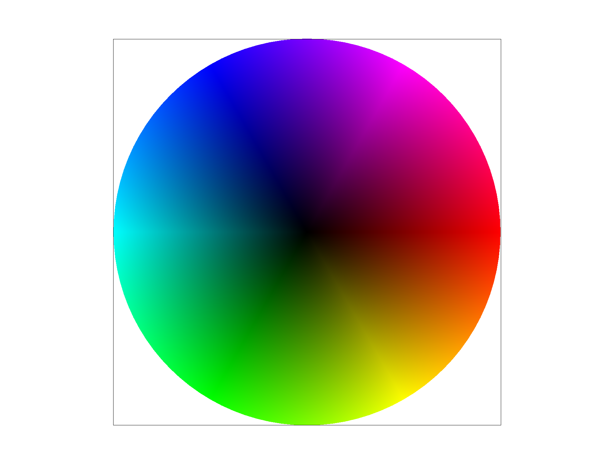
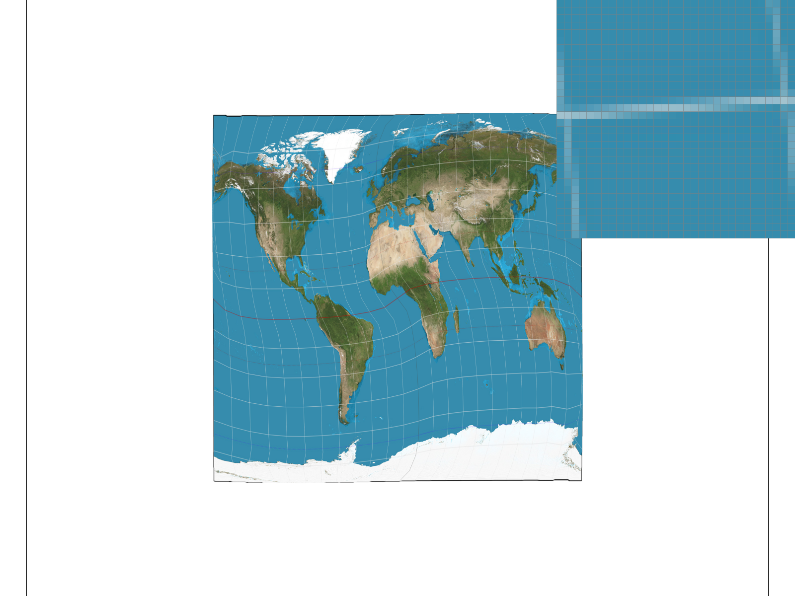
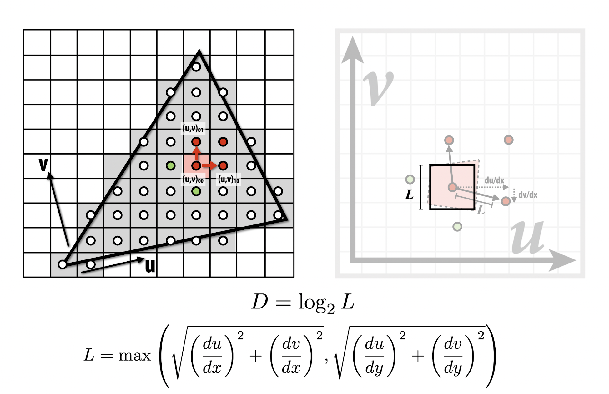
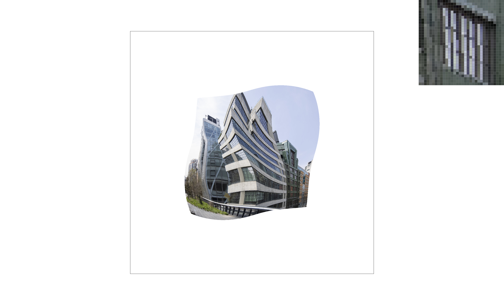
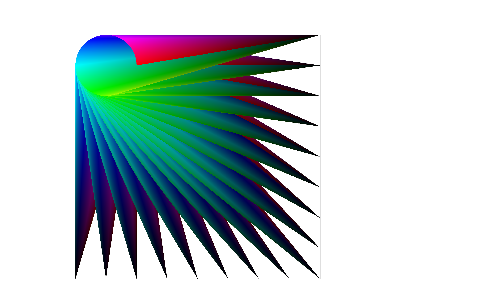

CS 184: Computer Graphics and Imaging, Spring 2018
Project 1: Rasterizer
Yifan Zhong, Yicheng Sun, CS184-Spring 2022
Overview
In this project, we built a rasterizer which can be used to render an image with diffent rasterizing techniques. We
first implement the algorithms to asterizing an image and speed it up in task 1. We then focus on making the image more
clear using supersampling in task 2. In task 3, we shift the gear to change out focus onto simple transforms including
rotating, scaling, and transiting. We then applied the concept of barycentric coordinates to achieve the gradient of
colors in task 4. We then further implement nearest neighbor and bilinear sampling to make the renderized image better.
Finally, in task 6, we implement level sampling to sample at different mipmap levels. To sum up, the rasterizer we built
equipped with different ways to get a better quality image.
Task 1: Drawing Single-Color Triangles
Helper Functions
-
/* check if the sample point(px, py) is in the triangle */
bool inTri(float px, float py, float ax, float ay, float bx, float by, float cx, float cy) {...}
-
/* check whether the point is inside or outside edge */
float l(float px, float py, float p0x, float p0y, float p1x, float p1y) {...}
-
/* normalize the number to resolve the precision issue of floating-point numbers during comparison */
int normalize_l(float f) {...}
Algorithms Workthrough
-
We calculate the maximum and minimum value of x and y in the triangle to limit our iteration in a smaller
rectangular
- max_x = (int) max({x0, x1, x2}) + 1;
- max_y = (int) max({y0, y1, y2}) + 1;
- min_x = (int) min({x0, x1, x2});
- min_y = (int) min({y0, y1, y2});
- We add 1 to the maximum value to ensure that all parts of the triangle are in the rectangle.
-
Since we only test the points within the rectangular space, this algorithms is no worse than the one
that check each sample within the bounding box.
-
We setup a nested for loop to iterate through each pixel from the top left corner to the bottom right
corner.
-
For each point (x, y), we first get the central value of the pixel (x+0.5, y+0.5) and pass it
to inTri().
-
inTri() takes three vertices of the triangle and the sample point as parameters, and calls l()
for each edge of the triangle.
-
With three return values from l(), we first normalize them to resolve the percision issue when comparing
with 0 by calling normalize_l(), inTri() check if all of them have the same sign, which eliminate
the issue caused by winding order of the vertices.
Optimization for Extra Credit
-
When we iterate through along a row/column, once we step out of the triangle, we will never return back to
the triangle on that row/column.
-
We set a condition to step out of the inner loop once we cross the bottom edge of the triangle.
-
We initialize a flag bool y_flag = false in the outer loop. Once we enter the triangle, set
flag to be true.
-
During the inner loop, if we find that the y_flag change from true to false, we
break the loop.
-
Timing Comparison Table
Sample Output
-
The pixel inspector is centered on the upper vertex of the purple triangle. The triangle is discontinuous at
this point.

Task 2: Antialiasing by Supersampling
Algorithms Workthrough
-
In RasterizerImp::rasterize_triangle()
-
Similar to what we did for task 1, we first get the max and min value of x and y to setup a loop
from upper left corner to bottom right corner of the bounding box.
-
Using the sample_rate initialized in RasterizerImp, we calculate the number of samples per edge
int r = (int) sqrt(this->sample_rate);.
-
In addition to the nested for loop from task 1, we add another two nested loops to iterate through
subparts of each pixel. We call inTri() for each sample point similar to task 1.
-
One thing to note is that since we are evaluating the subpart of each pixel, the x, y value for the
sample point change to (x+(i+0.5)/r, y+(j+0.5)/r). Here, i is the sampling position on the
x-coordinate, j is the sampling position on the y-coordinate. The following image shows the relations
between x, y and i, j when the sample rate is 4.
-
Instead of rasterize the sample point directly, we add it to the sample_buffer at index of y * width
+ x * this->sample_rate + i * r + j.
-
y * width + x locates the pixel we are supersampling, and i * r + j locates the sample
point within the pixel.
-
In RasterizerImp::set_sample_rate():
- We change the first parameter of resize() from width * height to width * height *rate.
- We add a call to clear_buffer() to clear the sample buffer after resize.
-
In RasterizerImp::set_framebuffer_target():
- We change the first parameter of resize() to width * height * rate as well.
-
In RasterizerImp::fill_pixel():
- Since we are supersampling a higher resolution image first, the index for the pixel to fill in sample_buffer becomes a
sample point. The index changes to (y * width + x) * this->sample_rate + i, and we need to loop sample_rate times
to fill the entire pixel with color c.
-
In RasterizerImp::resolve_to_framebuffer():
- For each pixel point, we create a temp_color[] array to store the floating RGB values. We then iterate over each sample point within the current pixel to obtain the net RGB value for that pixel.
- Note that the index of the current sample point is (y * width + x) * this->sample_rate + i where i is the value from 0 to this->sample_rate.
- We average the RGB net values to obtain the color of the pixel after supersampling.
- Finally, similar to the original code in this function, we call rgb_framebuffer_target() to render the frame.
-
Different from the original rasterizer pipeline, we first supersampling the image by simple_rate and before eventually
populating the pixel, we will downsampling the pixel and take the average of the pixel color.
Sample Output
As supersampling rate increate, we are sampling finer in each pixel. At the upper side of the triangle, since the corner
is extremely skinny, less sample points are categorized as be in the triangle. Thus, the color value of that corner is
getting lighter after averaging over the whole pixel. Moreover, as we approaching the corner vertex, higher sampling
rate will result in lighter color.
|
Supersample rate: 1
|
Supersample rate: 4
|
|
Supersample rate: 9
|

Supersample rate: 16
|
Extra Credit
- xxxxxxxxxxxxxxxxxxxxxxxxxxxx
- xxxxxxxxxxxxxx
- xxxxxxx
Task 3: Transforms
Cubeman
- We apply rotation and transition to each part of the cubeman respectively to make it look like he was jumping.
- We also changed the color of his head to blue and half of his arms and legs to skin color to make it look like he is
wearing short sleeves and shorts.
- Finally we apply scale to the whole robot to make it bigger.
Extra Credit
- xxxxxxxxxxxxxxxxxxxxxxxxxxxx
- xxxxxxxxxxxxxx
- xxxxxxx
Task 4: Barycentric coordinates
Barycentric Coordinate Explanation
The barycycentric coordinate let us represent a point with three vertices of the triangle. Each point is represented
by 3 values. Three vetices are (1, 0, 0), (0, 1, 0), (0, 0, 1) respectively. If we assign one of the full values of
RGB to the three vertices, we can use the coordinate of the point to assign the gradient ramp to the triangle.

Test 7 Output

Task 5: "Pixel sampling" for texture mapping
Texture Mapping
-
Pixel sampling uses the information we now have about the surrounding pixels to get texture information for the new
pixels. When we zoom in on the image, the original texture is spread out over a larger area. Therefore, we need to map
through the original texture to the additional pixel points.
-
Nearest Neighbor: by comparing the distance between the current pixel and 4 surrounding pixels, we assign the texture
information of the nearest pixel to the current pixel.
-
Bilinear Sampling: different from nearest neighbor, bilinear sampling combines the texture information of four pixel points
around the sampling pixel proportionally.
-
The most significant difference between nearest neighbor and bilinear sampling is that nearest neighbor only takes the value
of one existing pixel while bilinear sampling combines four pixels and make the sampling process more smooth.
Test Outputs
|
Nearest Neighbor with 1 sample/pixel
|
Nearest Neighbor with 16 samples/pixel
|
|
Bilinear sampling with 1 sample/pixel
|

Bilinear sampling with 16 samples/pixel
|
Comment on the Output
-
The result shows that using bilinear sampling with 16 samples per pixel will have the most great image and the one that
using nearest neighbor with 1 sample per pixel will have the most aliased image.
-
Comparing supersampling image with bilinear sampling image, we can see that supersampling can have a better overall affects
in anti-aliasing. However, due to the high cost of supersampling, bilinear sampling can also be a great choice in most cases.
-
There will be a large difference between these two methods if the image we rendering have hight frequency. In this case, the
nearest neighbor may not be able to capture as much details as bilinear sampling and may be easiler to be effected by redundant
texture information.
Task 6: "Level sampling" with mipmaps for texture mapping
Level Sampling
-
To map our image from the screen space to the texture space, some part of the image will be concentrated while other
parts maybe less compacted. In this case, some part of the image may have the resolution higher than necessary while
other parts may use lower sample rate. To get the texture of different resolution, we store them in a mipmap. Whenever
we wand an image with higher resolution, we can choose a higher level mipmap image. If we need a lower resolution image,
we can use a lower level mipmap image. Thus, the overall resolution of the image can be changed dynamically base on the
current texture.
-
To implement level mapping, we first want to implement get_level() function. In this case, we can make use of the
barycentric coordinates method we implemented in task 5. After getting (u, v), we calculate the value of (du/dx,
dv/dx) and (du/dy, dv/dy). With these values, we can perform the process in slides showed as below.

Test Output>
|

Zero Level + Nearst Sampling
|
Zero Level + Bilinear Sampling
|
|
Nearest Level + Nearst Sampling
|
Nearest Level + Bilinear Sampling
|
-
In these sampling patterns, supersampling is the one that requires a lot more memory than others. With the inceasing of
sample rate, we will need to also increase the memory used to save the pixel information with the same factor.
-
On the other hand, level sampling will requires more time to process due to multiple levels in the mipmap to be
considered and combined.
- Here, nearest sampling can be one of the cheapest in terms of both memory and time, but its image quality will also reduece significantly.
- For binear sampling, since we only need to consider 4 more points for each pixel, the time we used my increase slightly by a constant factor.
-
To choose between these techniques, if we would like to have a higher image quality regardless of the time and
memory cost, we should choose supersampling with high sample rate. Moreover, we should use bilinear sampling over
nearest sampling along with level sampling.
Potential Extra Credit
- We get the intuition from test 7 in ./svg/basic.
-
By changing the coordinate of the center point and combine multiple
shapes with color gradient, we get this image with a sense of art.

GitHub Page Link
https://cal-cs184-student.github.io/sp22-project-webpages-Chyvannn/